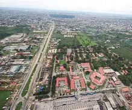

Business Hub
Home to Ariaria International Market, one of West Africa's largest trading centers.

Discover the commercial heartbeat of southeastern Nigeria. Aba is renowned for entrepreneurship, fashion, manufacturing, culture, and vibrant markets.
Aba, often called the Enyimba City, is one of Nigeria's most dynamic commercial centers. The city is famous for its thriving markets, skilled artisans, and energetic business environment.
Whether you're interested in trade, culture, food, or history, Aba offers visitors a unique experience that reflects the spirit and resilience of its people.
Home to Ariaria International Market, one of West Africa's largest trading centers.
Experience traditional Igbo culture, festivals, music, and hospitality.
Aba artisans are known for producing quality shoes, bags, clothing, and leather products.